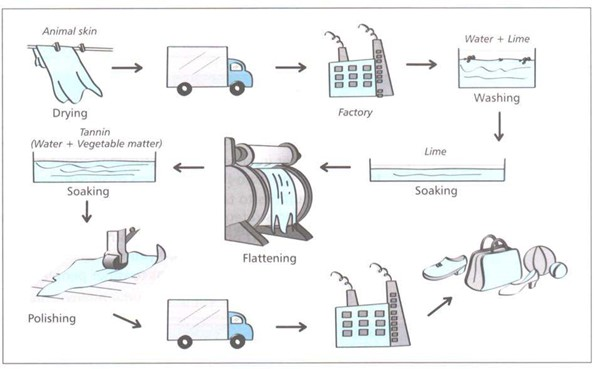

You should spend about 20 minutes on this task.
The diagram details the process of making leather products.
Summarise the information by selecting and reporting the main features, and make comparisons where relevant.
Write at least 150 words.
Write about the following topic:
You should spend about 40 minutes on this task.
Nowadays many people aim to create a balance between their work and other aspects of their life, however only few achieve it.
What are the problems in doing this and what solution can you suggest?
Give reasons for your answer and include any relevant examples from your own knowledge or experience.
Write at least 250 words.